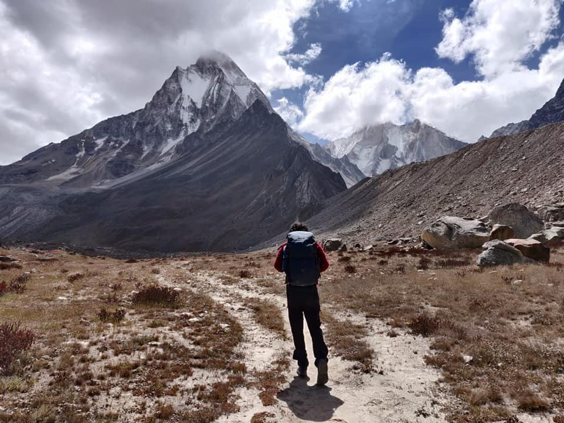
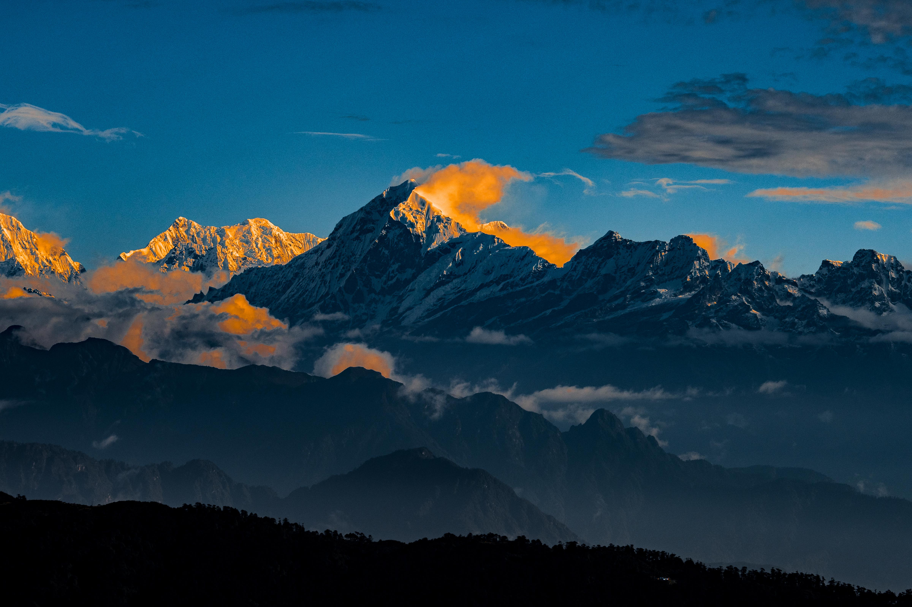
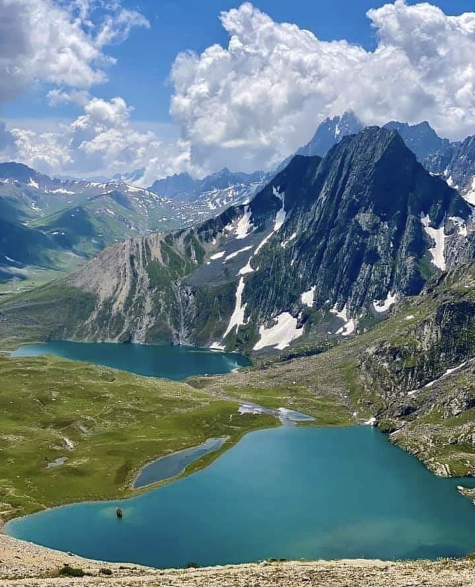
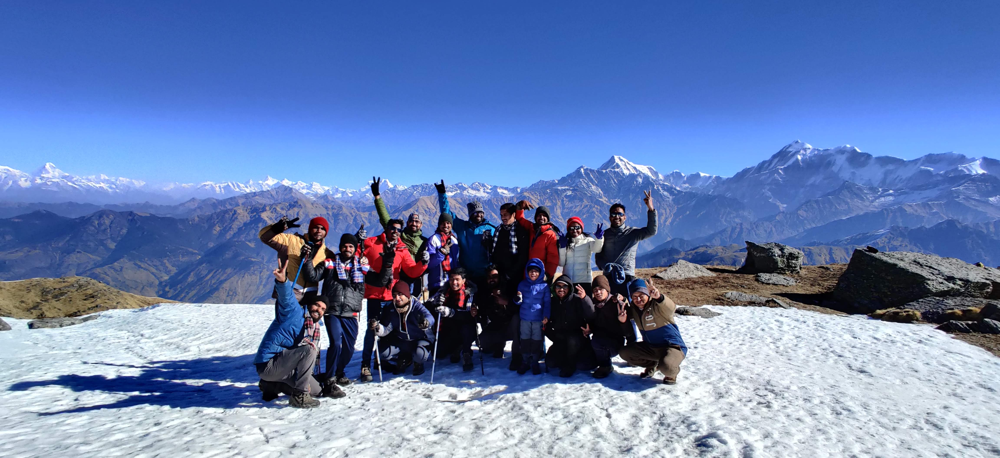

May – June
May – June
Everest Base Camp
5,364m·12 Days·Nepal
Walk to the base of the world's highest peak through Sherpa villages, Tengboche monastery, and the Khumbu glacier.
View Details →From Nepal base camps to Indian winter snow treks. All departures are custom — your group, your dates, your pace. Enquiry-based booking.
May – June
Walk to the base of the world's highest peak through Sherpa villages, Tengboche monastery, and the Khumbu glacier.
View Details → May – June
May – June
Into the Annapurna Sanctuary — a glacial amphitheatre enclosed by 7,000m+ peaks, rhododendron forests and charming villages.
View Details → May – June
May – June
Nepal's finest remote circuit — Tibetan culture, dramatic high passes, and far fewer trekkers than Annapurna or Everest.
View Details → May–Jun
Limited spots
May–Jun
Limited spots
A genuine technical summit — crampons, rope, and a real push above 5,000m. Led by a leader who has summited this peak personally.
View Details →
May–JunGangotri glacier to the high alpine meadow at Tapovan — beneath Shivling's sheer north face, at the physical source of the Ganga.
View Details → Apr–Jun
Apr–Jun
The "Valley of Gods" with a remote lake extension — traditional stone villages, the Supin river valley, and a pristine glacial lake beyond Har Ki Dun.
View Details → May–Jun
May–Jun
Rolling high-altitude meadows with panoramic views of Trishul and Nanda Ghunti — one of the finest bugyals in the Garhwal Himalaya.
View Details →
Mar–MayThe only place to see four 8,000m peaks at once — Everest, Kanchenjunga, Lhotse, Makalu — from a single ridge-top viewpoint.
View Details → Mar–Jun
Mar–Jun
Vast alpine meadows with panoramic Himalayan views — ideal for first-time trekkers and families. Gentle gradients, spectacular scenery.
View Details →
July – AugustSeven jewel-like alpine lakes across India's most beautiful mountain landscape. Wildflower meadows, granite ridges, and vivid blue water.
View Details →
Sep–Oct
Limited spots
A genuine technical summit — crampons, rope, and a real push above 5,000m. Led by a leader who has summited this peak personally.
View Details →Gangotri glacier to the high alpine meadow at Tapovan — beneath Shivling's sheer north face, at the physical source of the Ganga.
View Details →
Sep–Nov
The "Valley of Gods" with a remote lake extension — traditional stone villages, the Supin river valley, and a pristine glacial lake beyond Har Ki Dun.
View Details →
Sep–Oct
Rolling high-altitude meadows with panoramic views of Trishul and Nanda Ghunti — one of the finest bugyals in the Garhwal Himalaya.
View Details →The only place to see four 8,000m peaks at once — Everest, Kanchenjunga, Lhotse, Makalu — from a single ridge-top viewpoint.
View Details →
Sep–Dec
Vast alpine meadows with panoramic Himalayan views — ideal for first-time trekkers and families. Gentle gradients, spectacular scenery.
View Details →
December – MarchFrozen alpine lake with direct views of Trishul and Nanda Ghunti. Snow-covered forest trails and a summit ridge with panoramic winter views.
View Details → December – April
December – April
A winter summit trek through snow-dusted forest with a 360° Himalayan panorama from the top. One of India's finest snow treks.
View Details →